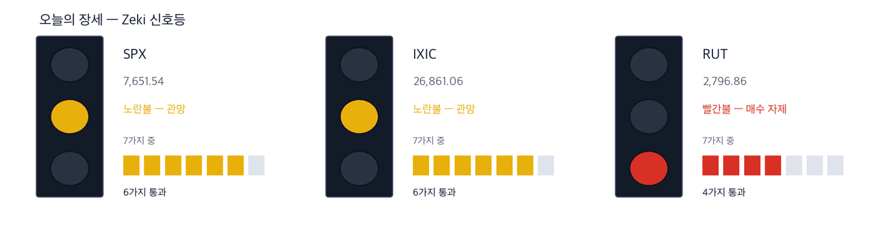

다우 50,927 +0.04% | 나스닥 종합 26,872 +0.04% | S&P 500 7,666 +0.19% | 러셀 2000 2,807 +0.35% | 10년 국채 5.24% -0.06%p | 제키 신호등 노란불 |

초록불은 매수 우위, 노란불은 관망, 빨간불은 매수 자제입니다. 칸은 7가지 조건 중 몇 가지를 만족하는지이고, 많을수록 오르는 종목이 넓게 퍼져 있습니다. 10월 1일 종가로 계산한 신호등입니다. S&P 500과 나스닥 종합은 6가지를 만족해 노란불, 러셀 2000은 4가지로 빨간불입니다. 세 지수를 합한 신호등은 노란불입니다.
관망 — 신호등이 뜻하는 자세입니다.
10월 1일 뉴욕에서 S&P 500은 0.19% 올라 7,666.45로 마쳤습니다. 장중 50일 이동평균을 밑돌았다가 다시 올라섰습니다. 러셀 2000은 200일 이동평균까지 내려갔다가 0.35% 올랐습니다. 다우와 나스닥 종합은 거의 제자리였습니다. (IBD)
방향을 바꾼 것은 국채 금리입니다. 미국 10년물 금리는 장중 5.34%까지 올랐다가 5.24%로 내려 마쳤습니다. 2년물은 0.10%포인트 내린 4.785%입니다. 안전한 미국 국채로 돈이 몰린 반면 프랑스·이탈리아·그리스 국채 금리는 뛰었습니다. 헤지펀드들이 많이 들고 있던 거래를 한꺼번에 정리한 것도 금리를 끌어내렸습니다. (월스트리트저널·IBD)
① 오전 8시 30분(동부) 9월 고용 보고서가 오늘의 방향을 정합니다. 시장 예상은 일자리 9만 개 증가, 실업률 4.1%입니다. 10월 28일 금리 인상 확률은 일주일 전 68.6%에서 24%로 내려왔습니다. 고용이 예상보다 세게 나오면 이 확률이 다시 오를 수 있습니다. (IBD)
② 유가는 다시 출렁입니다. 정유·해운주는 개장 첫 30분을 보고 다루십시오. 10월 1일 브렌트유는 4.4% 올라 배럴당 102.31달러였습니다. 그러나 금요일 새벽 프랑스가 유럽연합의 디젤 비축분 5,000만 배럴 방출을 제안했다는 보도가 나왔고, 원유 선물은 3% 넘게 내렸습니다. (월스트리트저널·IBD)
③ 신호등은 노란불입니다. 사더라도 한두 종목, 그리고 빠져나올 값을 먼저 정하십시오. 지수는 핵심 지지선에서 반등했지만 S&P 500이 50일 이동평균을 내줄 가능성도 남아 있습니다. (IBD)
숫자 하나 — 10월 금리 인상 확률 24%입니다. 화요일 50.9%, 수요일 37.6%에 이어 또 내렸습니다. 필립 제퍼슨 연준 부의장을 비롯한 연준 인사들이 금리를 더 올릴지 정하려면 시간이 더 필요하다는 뜻을 내비쳤습니다. (IBD·월스트리트저널)
| 날짜 | 무엇을 보는가 | 시장에 어떤 영향 |
|---|---|---|
| 10월 2일(금) 08:30 | 9월 고용 보고서 | 예상(90,000개)보다 세면 금리가 다시 오르고 기술주가 먼저 흔들립니다 |
| 10월 2일(금) 개장 전 | 테슬라 3분기 인도 대수 | 예상 461,974대(1년 전보다 7% 감소)와 견줍니다 |
| 10월 28일(수) | 연준 금리 결정 | 인상 확률이 24%까지 내려왔습니다. 고용과 물가가 이 숫자를 다시 움직입니다 |
마이크론은 주당순이익이 1년 전보다 1,003%, 매출이 379% 늘었다고 발표했고 다음 분기 전망도 높였습니다. 발표 직후 주가는 제자리였지만 10월 1일 반등했습니다. 반도체 상장지수펀드(SMH)는 1.45% 올랐습니다. 같은 날 샌디스크와 씨게이트도 함께 올랐습니다. (IBD)
쟁점은 이 숫자가 이미 값에 들어가 있었느냐입니다. 저장장치 수요가 인공지능 데이터센터에서 나오는 한, 메모리와 하드디스크는 같은 주문서를 봅니다.
| 종가 | 당일 | 한 주 | 20거래일 |
|---|---|---|---|
| 1,097.39달러 | +3.03% | +1.56% | +14.78% |
| 3개월 | 제키 강도 | 제키 자금 | 고점 대비 |
|---|---|---|---|
| +12.51% | 97 | B | -12.5% |
| 누가 | 마이크론 테크놀로지, 미국 최대 메모리 반도체 회사입니다. |
| 무엇을 | 회계연도 4분기 실적과 전망이 예상을 넘었습니다. 10월 1일 3.03% 올라 1,097.39달러에 마쳤습니다. |
| 언제 | 9월 30일 장 마감 뒤 발표, 10월 1일 첫 거래입니다. |
| 어디서 | 나스닥 상장 종목입니다. |
| 왜 | 인공지능 서버 한 대에 들어가는 메모리가 늘어 값과 물량이 함께 오르기 때문입니다. |
| 어떻게 | 거래량이 50일 평균의 1.45배로 늘었습니다. 1년 최고가보다 12.5% 아래입니다. |
| 종가 | 당일 | 한 주 | 20거래일 |
|---|---|---|---|
| 945.57달러 | +2.52% | +4.38% | +17.04% |
| 3개월 | 제키 강도 | 제키 자금 | 고점 대비 |
|---|---|---|---|
| +15.38% | 96 | A | -17.3% |
| 누가 | 씨게이트 테크놀로지, 데이터센터용 하드디스크를 만드는 회사입니다. |
| 무엇을 | 마이크론 실적 다음 날 2.52% 올라 945.57달러에 마쳤습니다. |
| 언제 | 10월 1일 목요일입니다. |
| 어디서 | 나스닥 상장 종목입니다. |
| 왜 | 인공지능이 만드는 데이터는 결국 대용량 하드디스크에 쌓이기 때문입니다. |
| 어떻게 | 거래량은 50일 평균의 0.57배로 적었습니다. 1년 최고가보다 17.3% 아래입니다. |
금리가 내리자 기술주 가운데서도 데이터센터 부품이 먼저 올랐습니다. 광통신 부품을 만드는 루멘텀은 10월 1일 7.7% 올라 처음으로 1,000달러 위에서 마쳤습니다. 여러 번 막혔던 값입니다. 전자부품 유통사 에이브넷도 지난달 넘었던 저항선을 다시 넘었습니다. (IBD)
인공지능 서버끼리 빛으로 데이터를 주고받는 장비가 늘수록 광부품 수요가 커집니다. 다만 두 종목 모두 금리에 민감한 성장주라 고용 보고서 결과를 함께 봐야 합니다.
| 종가 | 당일 | 한 주 | 20거래일 |
|---|---|---|---|
| 1,045.78달러 | +7.67% | +12.57% | +20.12% |
| 3개월 | 제키 강도 | 제키 자금 | 고점 대비 |
|---|---|---|---|
| +43.59% | 97 | A | -3.7% |
| 누가 | 루멘텀 홀딩스, 광통신 부품과 레이저를 만드는 회사입니다. |
| 무엇을 | 10월 1일 7.67% 올라 1,045.78달러에 마쳤습니다. |
| 언제 | 10월 1일 목요일입니다. |
| 어디서 | 나스닥 상장 종목입니다. |
| 왜 | 데이터센터 안의 광연결이 늘수록 이 회사 부품이 더 팔리기 때문입니다. |
| 어떻게 | 거래량이 50일 평균의 1.59배로 늘었습니다. 1년 최고가보다 3.7% 아래입니다. |
| 종가 | 당일 | 한 주 | 20거래일 |
|---|---|---|---|
| 102.24달러 | +2.29% | +1.32% | +13.61% |
| 3개월 | 제키 강도 | 제키 자금 | 고점 대비 |
|---|---|---|---|
| +24.41% | 92 | A | -2.2% |
| 누가 | 에이브넷, 반도체와 전자부품을 기업에 공급하는 유통 회사입니다. |
| 무엇을 | 10월 1일 2.29% 올라 102.24달러에 마쳤습니다. |
| 언제 | 10월 1일 목요일입니다. |
| 어디서 | 나스닥 상장 종목입니다. |
| 왜 | 부품 주문은 완제품보다 먼저 늘어, 유통사 실적이 경기를 앞서 보여 주기 때문입니다. |
| 어떻게 | 거래량은 50일 평균의 0.95배로 평소 수준이었습니다. 1년 최고가보다 2.2% 아래입니다. |
미군이 이란의 해협 통제를 약화시키면서 호르무즈 해협을 지나는 원유 운송이 전쟁 전 수준으로 돌아가고 있습니다. 그런데도 유가는 내리지 않았습니다. 원유를 연료로 바꾸는 공급망이 아직 막혀 있어서입니다. 미국 휘발유 평균값은 갤런당 4.41달러를 넘었습니다. (월스트리트저널)
10월 1일 에너지 상장지수펀드(XLE)는 1.95% 올랐고, 정유사와 해운사가 앞장섰습니다. (IBD) 배가 다시 다니고 운임이 높은 지금, 이익이 가장 먼저 잡히는 곳이 유조선 회사입니다.
| 종가 | 당일 | 한 주 | 20거래일 |
|---|---|---|---|
| 51.54달러 | +4.61% | +7.44% | +13.47% |
| 3개월 | 제키 강도 | 제키 자금 | 고점 대비 |
|---|---|---|---|
| +40.24% | 93 | A | -6.1% |
| 누가 | 프론트라인, 대형 원유 운반선을 운영하는 해운사입니다. |
| 무엇을 | 10월 1일 4.61% 올라 51.54달러에 마쳤습니다. |
| 언제 | 10월 1일 목요일입니다. |
| 어디서 | 뉴욕증권거래소 상장 종목입니다. |
| 왜 | 해협이 다시 열려 운항이 늘면, 높은 운임이 곧 이익이 되기 때문입니다. |
| 어떻게 | 거래량이 50일 평균의 1.22배였습니다. 1년 최고가보다 6.1% 아래입니다. |
| 종가 | 당일 | 한 주 | 20거래일 |
|---|---|---|---|
| 85.79달러 | +2.50% | +5.97% | +5.37% |
| 3개월 | 제키 강도 | 제키 자금 | 고점 대비 |
|---|---|---|---|
| +17.50% | 84 | A | -4.7% |
| 누가 | 스코르피오 탱커스, 디젤·휘발유 같은 석유제품을 나르는 해운사입니다. |
| 무엇을 | 10월 1일 2.50% 올라 85.79달러에 마쳤습니다. |
| 언제 | 10월 1일 목요일입니다. |
| 어디서 | 뉴욕증권거래소 상장 종목입니다. |
| 왜 | 디젤이 모자란 곳으로 먼 길을 돌아 실어 나를수록 배가 더 오래 묶이기 때문입니다. |
| 어떻게 | 거래량이 50일 평균의 3.41배로 크게 늘었습니다. 1년 최고가보다 4.7% 아래입니다. |
나이키는 10월 1일 장 마감 뒤 매출 전망을 낮추고, 내년부터 인력을 줄여 회사를 작게 만들겠다고 밝혔습니다. (월스트리트저널) 주가는 시간외에서 내렸습니다. (IBD) 정규장 종가는 35.15달러로 1년 최고가보다 54% 낮고, 제키 강도는 5, 추세 지표(MACD 라인)는 0 아래입니다. 몸집을 줄인 뒤 매출이 바닥을 찍는지 확인하고 다룹니다.
같은 이유로 뺀 것 하나 더 — 마텔입니다. 브랜드 사업을 하는 오센틱 브랜즈 그룹이 인수 의사를 타진했다는 보도가 나왔습니다. (월스트리트저널) 주가는 10월 1일 18.8% 뛰었지만 인수 소식에 오른 값입니다. 제키 강도는 43이고 추세 지표가 0 아래입니다.
| 종목 | ①20거래일 상승 | ②강도 90↑ | ③자금 3개월 A~B | ④2주째 유지 | 충족 | 근거의 무게 |
|---|---|---|---|---|---|---|
| 마이크론 테크놀로지(MU) | O | O | O | O | 4/4 | 근거 확실 |
| 씨게이트 테크놀로지(STX) | O | O | O | O | 4/4 | 근거 확실 |
| 루멘텀 홀딩스(LITE) | O | O | O | O | 4/4 | 근거 확실 |
| 에이브넷(AVT) | O | O | O | O | 4/4 | 근거 확실 |
| 프론트라인(FRO) | O | O | O | X | 3/4 | 근거 있음 |
| 스코르피오 탱커스(STNG) | O | X | O | X | 2/4 | 확인 필요 |
네 칸은 ①20거래일 동안 올랐는가 ②제키 강도가 90 이상인가입니다. 이어서 ③3개월 제키 자금이 A 또는 B인가 ④최근 2주에 자금이 약해지지 않았는가입니다. O의 개수가 근거의 무게를 정합니다. 오늘 6종목 가운데 ②를 넘은 곳은 5곳, ④를 넘은 곳은 4곳입니다.
미국에는 외국인·기관이 몇 주를 샀는지 알려 주는 일별 공시가 없습니다. 아래 등급은 오른 날과 내린 날의 거래량을 견줘 되짚은 추정이지 집계가 아닙니다. 10월 1일 종가까지의 자료입니다.
어제 표에 실린 종목은 빼고, 오늘 새로 들어온 종목만 싣습니다.
| 종목 | 수급 3개월→2주 | 거래량 | 어떻게 읽나 |
|---|---|---|---|
| Arcelor Mittal NY Registry Shares NEW MT | B → E ↓ | 1.30배 | 주의 — 등급이 내리는데 물량이 늘었습니다 |
| Credo Technology Group Holding CRDO | C → A ↑ | 1.28배 | 관심✗ — 매수세가 세게 붙었습니다 |
| APi Group APG | A → A = | 0.86배 | 관심✗ — 3개월도 2주도 사는 쪽입니다 |
| Heico Corporation HEI-A | E → A ↑ | 1.11배 | 확인✗ — 올랐지만 거래가 얕습니다 |
| Cadence Design Systems CDNS | B → A ↑ | 1.08배 | 확인✗ — 올랐지만 거래가 얕습니다 |
| Heico Corporation HEI | D → A ↑ | 1.00배 | 확인✗ — 올랐지만 거래가 얕습니다 |
| Applied Materials AMAT | D → A ↑ | 0.86배 | 확인✗ — 올랐지만 거래가 얕습니다 |
| Brighthouse Financial BHF | E → A ↑ | 0.86배 | 확인✗ — 올랐지만 거래가 얕습니다 |
기사와 값이 맞아도 자금은 따로 봅니다. 아래 표는 최근 5거래일 거래량이 50일 평균을 넘었는지를 답합니다.
| 종목 | 50일 평균을 넘었나 | 제키 자금 3개월 → 2주 | 어떻게 읽나 |
|---|---|---|---|
| 마이크론 테크놀로지(MU) | 0.83배 ✗ 못 넘었습니다 | B → A | 확인 — 올랐지만 거래가 얕습니다 |
| 씨게이트 테크놀로지(STX) | 0.63배 ✗ 못 넘었습니다 | A → A | 관망 — 이어지지만 거래가 말랐습니다 |
| 루멘텀 홀딩스(LITE) | 1.10배 ✓ 넘었습니다 | A → A | 관심 — 3개월도 2주도 사는 쪽입니다 |
| 에이브넷(AVT) | 1.07배 ✓ 넘었습니다 | A → A | 관심 — 3개월도 2주도 사는 쪽입니다 |
| 프론트라인(FRO) | 1.09배 ✓ 넘었습니다 | A → C | 관망 — 등급이 내렸고 거래는 평소 수준입니다 |
| 스코르피오 탱커스(STNG) | 1.75배 ✓ 넘었습니다 | A → B | 주의 — 등급이 내리는데 물량이 늘었습니다 |
칸의 말은 저희의 매매를 뜻하지 않습니다. 관심은 값과 거래가 같은 쪽이라는 뜻입니다. 주의는 등급이 내리는데 거래가 몰렸다는 뜻이고, 관망은 등급이 내렸지만 거래가 몰리지 않았다는 뜻입니다.
| 근거의 무게 | 종목 | S&P 500을 이긴 수 | 지수를 웃돈 폭 | 지수를 밑돈 폭 | 전부 평균 |
|---|---|---|---|---|---|
| 근거 확실 | 31 | 18 / 31 | +3.62%p | -4.07%p | +0.40%p |
| 근거 있음 | 15 | 6 / 15 | +3.04%p | -3.67%p | -0.99%p |
| 확인 필요 | 18 | 6 / 18 | +3.85%p | -2.87%p | -0.63%p |
| 근거 없음 | 4 | 0 / 4 | 없음 | -2.42%p | -2.42%p |
| 테마 제외 | 7 | 0 / 7 | 없음 | -3.51%p | -3.51%p |
| 근거 확실 31 | +0.40%p | ||||||
| 근거 있음 15 | −0.99%p | ||||||
| 확인 필요 18 | −0.63%p | ||||||
| 근거 없음 4 | −2.42%p | ||||||
| 테마 제외 7 | −3.51%p |
가운데 선이 S&P 500입니다. 오른쪽이 웃돈 것, 왼쪽이 밑돈 것입니다. 이름 옆 회색 숫자는 그 칸의 종목 수입니다.
근거 확실 31종목 가운데 18종목이 S&P 500을 이겼습니다. 이긴 18종목은 평균 3.6%p 웃돌았고, 진 13종목은 평균 4.1%p 밑돌았습니다. 전부 합치면 지수보다 +0.4%p 입니다.
20거래일(약 한 달) 뒤 결과는 10월 7일에 처음 나오고, 차는 대로 이 자리에 표로 더해집니다.
60거래일(약 3개월) 뒤 결과는 12월 3일에 처음 나오고, 차는 대로 이 자리에 표로 더해집니다.
판정. 두 시장 합쳐 60건이 찬 기간마다 미리 정해 둔 방식으로 판정해 그대로 싣습니다. 5거래일 134건 — 지수보다 낫다고 할 수 없습니다. 다만 근거 등급이 높은 종목이 성적도 좋았습니다. (41.8%가 지수를 이겼습니다) · 20거래일 0건 / 필요 60건 · 60거래일 0건 / 필요 60건
| 언제 | 무엇을 보는가 | 무엇을 뜻하는가 |
|---|---|---|
| 개장 전(동부 08:30) | 9월 고용 보고서와 10년물 금리 | 일자리가 90,000개를 크게 넘고 10년물이 5.3% 위로 오르면 기술주가 먼저 내립니다 |
| 개장 30분(동부 09:30~10:00) | 마이크론이 최근 엿새 고가 1,108.72달러 위에서 거래되는가 | 그 위에 있으면 실적 뒤 매수가 이어지는 것입니다. 그 값 아래에 있으면 기대가 이미 값에 들어가 있었다는 뜻입니다 |
| 마감 30분(동부 15:30~16:00) | S&P 500이 50일 이동평균 7,651 위에서 마치는가 | 10월 1일 장중에 내줬다 되찾은 선입니다. 마감에서 내주면 반등이 실패한 것입니다 |
오늘 고용 보고서가 다음 주 금리 방향을 정합니다. 월가 밖의 일도 있습니다. 미 국방부는 세 번째 항공모함 전단과 병력 9,000~1만 명을 중동에 더 보냅니다. 액센츄어는 인공지능 수요로 4분기 이익이 19억9,000만 달러로 늘었습니다. 미국 3분기 자동차 판매는 정체했고 GM은 5.5% 줄었습니다. (월스트리트저널)
This is the Rex Way, ZekiRex™